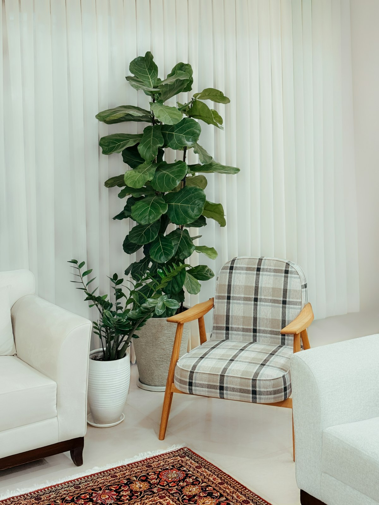
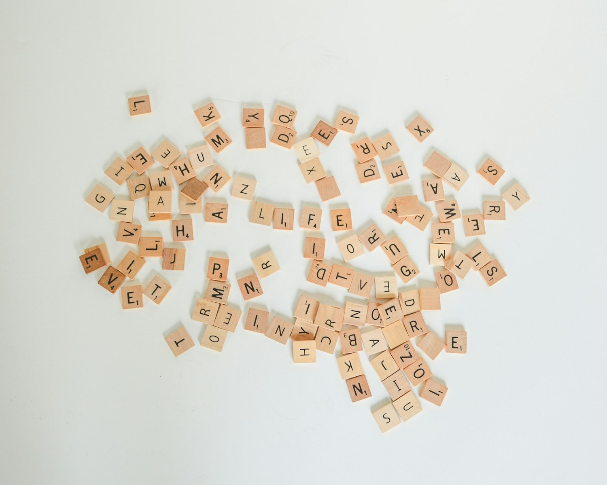
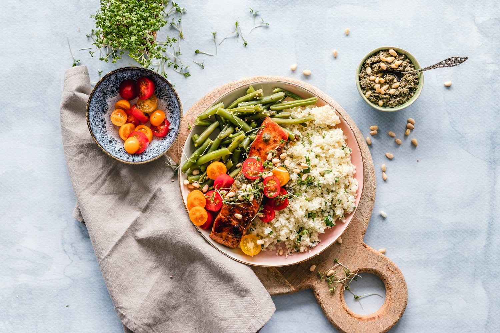
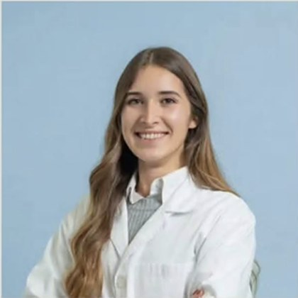
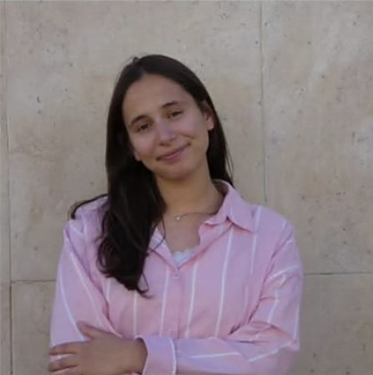

Instituto Adriano Batista
Uma só árvore, três formas de cuidar.
Psicologia, Terapia da Fala e Nutrição no mesmo instituto. Três áreas, três cores, uma só raiz: ouvir primeiro.
Toque na árvore: os impulsos seguem até às pontas.
Por onde começar?
Escolha o que reconhece. A árvore acende o resto.
Nem sempre é claro a que área pedir ajuda. Marque o que se aplica e veja que partes da árvore se iluminam — é só um ponto de partida para a conversa.
Escolha o que reconhece: a árvore acende as áreas relacionadas.
Isto não é um diagnóstico. Só uma avaliação com um profissional define o melhor caminho.As três áreas
Cada cor do símbolo é um modo de cuidar.
No mesmo instituto, a mente, a voz e a alimentação deixam de ser assuntos separados. Quando faz sentido, as áreas cruzam-se; quando não, cada uma segue o seu caminho.

Azul · Psicologia
Um espaço para dizer o que pesa.
Consultas de psicologia com escuta atenta, sem pressa e sem julgamentos. Um lugar para pôr em palavras o que se sente e encontrar, passo a passo, formas de lidar com isso.
- Ansiedade, stress e preocupações
- Emoções e comportamento
- Mudanças e perdas
- Relações e autoestima
Turquesa · Terapia da Fala
Ajudar cada palavra a chegar ao destino.
Avaliação e acompanhamento da comunicação: fala, linguagem, voz, leitura e escrita, e também a forma de mastigar e engolir. O objetivo é comunicar com mais segurança no dia a dia.
- Sons da fala e articulação
- Linguagem: compreender e expressar
- Leitura e escrita
- Voz, mastigação e deglutição


Verde · Nutrição
Comer bem sem complicar o dia a dia.
Avaliação e orientação alimentar adaptadas à rotina de cada pessoa, sem dietas milagrosas nem proibições. Com a Dra. Marta Martins.
- Hábitos e planeamento alimentar
- Seletividade e recusa alimentar
- Alimentação nas várias fases da vida
- Relação com a comida
Vamos conhecer a equipa
Pessoas que dão fruto ao cuidado.
Dra. Ana Batista Marques
Psicóloga
Dra. Beatriz Nunes
Psicóloga
Dra. Gabriela Valente
Psicóloga
Dra. Liliana Martins
Psicóloga
Dra. Sara Barbosa
Psicóloga
Dra. Vânia Guiomar
Psicóloga

Dra. Marta Martins
Nutricionista

Matilde Santos
Equipa pedagógica
a confirmar com o cliente
Terapia da Fala
Equipa a apresentar
Nomes e fotografias fornecidos pelo cliente (publicações do Instagram @institutoadrianobatista). Pode deslizar para o lado.
A primeira consulta
Começa por uma conversa.
Um percurso de exemplo, para saber o que esperar. Fases, duração e valores: a confirmar com o cliente
- 1
Primeiro contacto
Por telefone, mensagem no Instagram ou pelo formulário. Diga-nos, por palavras suas, o que o traz até aqui.
- 2
Conversa inicial
Percebemos o que preocupa e que área, ou áreas, faz sentido envolver. Sem compromisso e sem pressa.
- 3
Avaliação e plano
Definimos objetivos e a frequência das sessões, em conjunto com a pessoa e, se for o caso, com a família.
- 4
Acompanhamento
Sessões, ajustes e, quando faz sentido, conversa entre as áreas para que tudo aponte no mesmo sentido.
Perguntas que nos fazem
Posso começar por uma área e juntar outra mais tarde?
Quanto custa e quanto dura uma consulta?
Há consultas online?
Que idades acompanham?
Preciso de encaminhamento para marcar?
Contacto
Vamos começar a conversa?
Ligue, escreva-nos no Instagram ou deixe os seus dados. Respondemos para combinar o melhor primeiro passo.
911 977 870- Instagram@institutoadrianobatista
- Moradaa confirmar com o cliente
- Horárioa confirmar com o cliente
- Emaila confirmar com o cliente